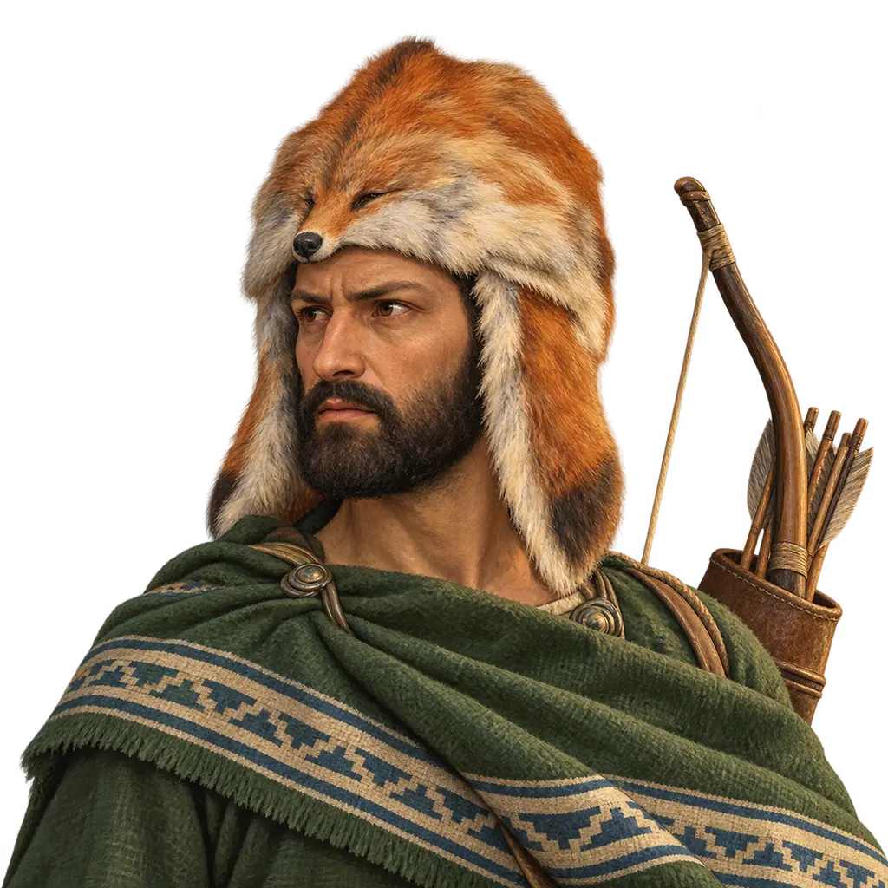
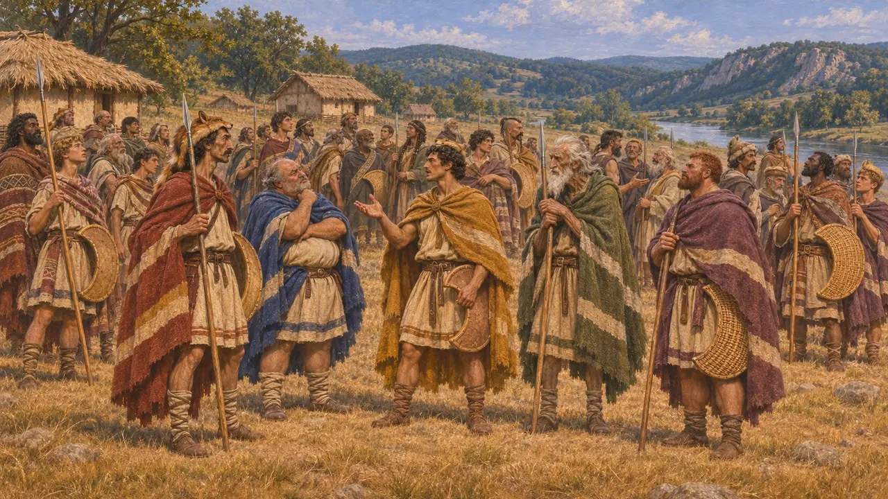
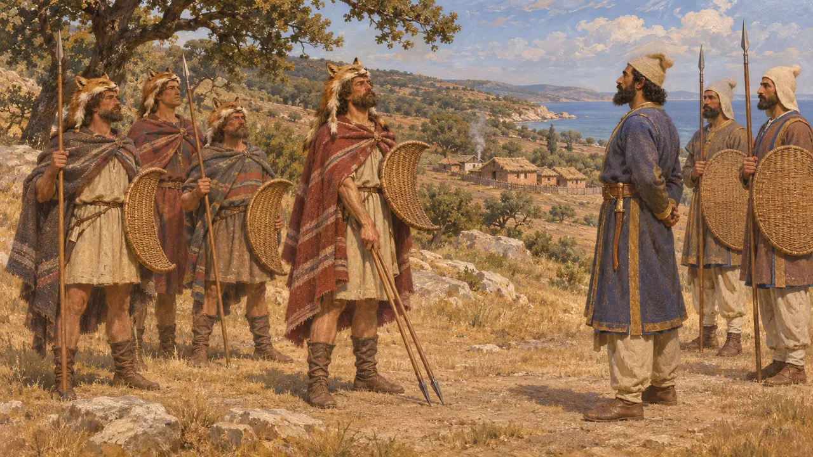
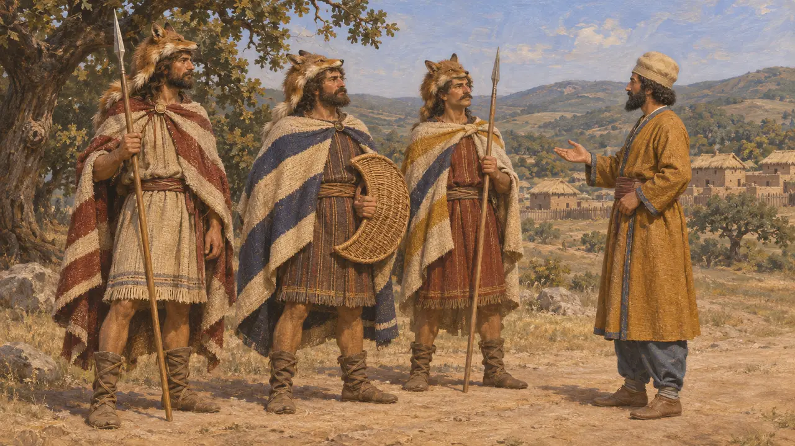
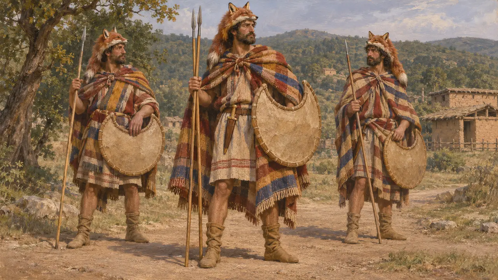
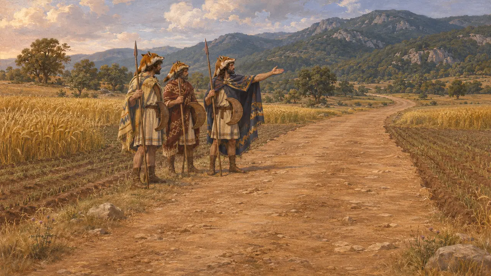

Энциклопедия › Воины и корабли

Фракийские воины
Племенные бойцы Фракии, подданные и воины Царя, около 513–479 до н. э.
В игре: Уровень 9: Канал
Фракийцы — множество народов, живших между Эгейским морем, Чёрным морем и Истром и разделённых на племена под властью собственных вождей и царей. При Дарии Персия включила прибрежную Фракию в состав державы, а в 480 году фракийские отряды выступили с Ксерксом — легковооружённые, с метательными копьями, небольшими щитами и кинжалами.
В игре: У Афона игра выставляет фракийских лучников, наездников, пельтастов и вождей; пельтаст — метатель дротиков без доспехов, со щитом в форме полумесяца. Геродот не упоминает фракийских луков, а к 480 году до н. э. большинство прибрежных фракийцев были подданными Царя.

Народ из многих племён
Античное свидетельствоГеродот называет фракийцев самым многочисленным народом на земле после индийцев. По его словам, они были бы сильнее всех, если бы объединились под властью одного правителя или ради одной цели, но этого так и не случилось. Он перечисляет множество племён, в том числе гетов, эдонов, бистонов, сатров и бригов, и у каждого из них свои обычаи и вожди.
Herodotus 5.3; 6.45; 7.110

Под властью персов
Античное свидетельствоПо словам Геродота, Дарий покорил гетов около 513 года во время похода к Истру, а затем его полководец Мегабаз подчинил Царю народы фракийского побережья. Власть персов здесь, вероятно, ослабла во время Ионийского восстания. В 492 году Мардоний восстановил её, хотя бриги ночью напали на его лагерь и ранили его; Геродот сообщает, что он не отступил, пока не покорил их.
Herodotus 4.93; 5.2; 6.44-45

Скудра в персидских списках
СпорныйНадписи Дария, в том числе надпись на его гробнице в Накше-Рустаме, называют среди народов Царя страну Скудра, а таблички из крепостного архива Персеполя упоминают работников, обозначенных как скудрийцы. Многие историки отождествляют Скудру с Фракией или её частью. Другие полагают, что название охватывало более обширную или менявшуюся область в Европе и что обозначение в табличках вовсе не обязательно означает, будто работники прибыли из Фракии.
DNa; W. Henkelman and M. Stolper, Ethnic Identity and Ethnic Labelling at Persepolis: The Case of the Skudrians, 2009

Вооружение и облачение в войске Ксеркса
Античное свидетельствоГеродот пишет, что фракийцы в войске Ксеркса носили шапки из лисьего меха, хитоны под пёстрыми плащами и сапоги из оленьей кожи, а вооружены были дротиками, лёгкими щитами и короткими кинжалами. О доспехах он не упоминает. Он добавляет, что это были фракийцы, переселившиеся в Азию, где их называли вифинцами. Греческие вазописцы часто изображали фракийцев с серповидным щитом — пелтой, давшей имя лёгкой пехоте, которую позднее называли пельтастами.
Herodotus 7.75; J. G. P. Best, Thrakian Peltasts and their Influence on Greek Warfare, 1969

Вдоль царской дороги
Античное свидетельствоГеродот перечисляет фракийские народы, через земли которых прошёл Ксеркс, и пишет, что их заставили идти с его войском. Горные сатры, по его словам, никогда никому не подчинялись, и у них было прорицалище Диониса. Он добавляет, что и в его время фракийцы чтили дорогу, по которой прошёл Ксеркс, и не пахали и не засевали её.
Herodotus 7.110-111; 7.115
Источники
- Herodotus, Histories, books 4-8
- DNa
- W. Henkelman and M. Stolper, Ethnic Identity and Ethnic Labelling at Persepolis: The Case of the Skudrians, 2009
- P. Briant, From Cyrus to Alexander, 2002
- Z. Archibald, The Odrysian Kingdom of Thrace, 1998
- J. G. P. Best, Thrakian Peltasts and their Influence on Greek Warfare, 1969